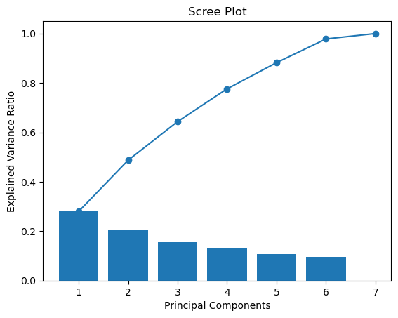
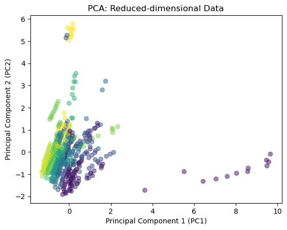

import pandas as pd
from sklearn.decomposition import PCA
from sklearn.preprocessing import StandardScaler
import matplotlib.pyplot as plt
from sklearn.preprocessing import LabelEncoder
import numpy as np
nb_record = pd.read_csv("/Users/kendallgilbert/dsan-5000-project-kendallgilbert180/dsan-website/5000-website/data/01-modified-data/nb_record.csv")
label_encoder = LabelEncoder()
nb_record['Country'] = label_encoder.fit_transform(nb_record['Country'])
nb_record['Year'] = label_encoder.fit_transform(nb_record['Year'])
X = nb_record.drop(columns=['Value'])
scaler = StandardScaler()
X_standardized = scaler.fit_transform(X)
cov_matrix = np.cov(X_standardized, rowvar=False)
print(cov_matrix)
eigenvalues, eigenvectors = np.linalg.eig(cov_matrix)
print("Eigenvalues:")
print(eigenvalues)
print("Eigenvectors:")
print(eigenvectors)
sorted_indices = np.argsort(eigenvalues)[::-1]
sorted_eigenvalues = eigenvalues[sorted_indices]
# Calculate the cumulative explained variance
cumulative_explained_variance = np.cumsum(sorted_eigenvalues) / np.sum(sorted_eigenvalues)
# Plot
plt.plot(range(1, len(cumulative_explained_variance) + 1), cumulative_explained_variance, marker='o')
plt.title('Cumulative Explained Variance')
plt.xlabel('Number of Principal Components')
plt.ylabel('Cumulative Explained Variance')
# Determine the number of components that capture a desired amount of variance
desired_variance = 0.96
num_components = np.argmax(cumulative_explained_variance >= desired_variance) + 1
print(f"Number of components to capture {desired_variance * 100}% variance: {num_components}")
# Apply PCA with the desired number of components
pca = PCA(n_components=num_components)
X_pca = pca.fit_transform(X_standardized)
# Display the explained variance ratio for each selected component
explained_variance_ratio = pca.explained_variance_ratio_
print("Explained Variance Ratio for Each Component:")
print(explained_variance_ratio)
plt.bar(range(1, len(explained_variance_ratio) + 1), explained_variance_ratio)
plt.title('Scree Plot')
plt.xlabel('Principal Components')
plt.ylabel('Explained Variance Ratio')
plt.show()
# Reduce Data View
reduced_df = pd.DataFrame(data=X_pca, columns=[f'PC{i+1}' for i in range(num_components)])
print("Reduced-dimensional Data:")
print(reduced_df.head())
plt.scatter(reduced_df['PC1'], reduced_df['PC2'], c=nb_record['Country'], cmap='viridis', alpha=0.5)
plt.title('PCA: Reduced-dimensional Data')
plt.xlabel('Principal Component 1 (PC1)')
plt.ylabel('Principal Component 2 (PC2)')[[ 1.00194175 -0.03049421 0.15115429 0.22811143 0.02736602 0.13868473
0.16902344]
[-0.03049421 1.00194175 0.07505357 -0.10884402 0.82865356 -0.25662652
0.06920886]
[ 0.15115429 0.07505357 1.00194175 0.08170361 0.11374335 0.18095022
0.01009957]
[ 0.22811143 -0.10884402 0.08170361 1.00194175 0.06127009 -0.03217022
0.09469703]
[ 0.02736602 0.82865356 0.11374335 0.06127009 1.00194175 -0.20078069
0.11512625]
[ 0.13868473 -0.25662652 0.18095022 -0.03217022 -0.20078069 1.00194175
0. ]
[ 0.16902344 0.06920886 0.01009957 0.09469703 0.11512625 0.
1.00194175]]
Eigenvalues:
[1.9632472 0.15326685 1.45451717 0.67420804 0.74291868 1.09626774
0.92916654]
Eigenvectors:
[[-0.01529531 0.00438522 -0.61021254 0.40535504 -0.6696721 0.11850718
0.02387675]
[ 0.66855861 -0.70680999 0.03846796 -0.09904464 -0.1391302 -0.14523539
0.04133846]
[ 0.07128445 -0.00523531 -0.43454151 0.3886713 0.51866918 -0.5838478
-0.21237571]
[-0.00854429 -0.14092315 -0.45858358 -0.43391151 0.21397904 0.4521296
-0.57557046]
[ 0.66246501 0.69066034 -0.08918412 -0.24157562 -0.09273988 -0.09068837
-0.03147623]
[-0.30534256 -0.05527357 -0.31037978 -0.65427186 -0.18693752 -0.51181683
0.28705638]
[ 0.12468758 -0.0211376 -0.35035158 0.01012004 0.41693045 0.38650026
0.73344673]]
Number of components to capture 96.0% variance: 6
Explained Variance Ratio for Each Component:
[0.27992035 0.20738548 0.15630617 0.13248083 0.10592556 0.09612878]
Reduced-dimensional Data:
PC1 PC2 PC3 PC4 PC5 PC6
0 -0.246079 -0.453701 -0.132175 1.406282 1.027381 0.696511
1 -0.535873 -1.701779 0.508182 0.668608 0.601298 0.823060
2 0.221558 -0.563274 -0.157787 1.850489 0.274252 -0.282561
3 0.067476 -1.126258 0.246698 1.205389 0.538299 0.097519
4 -0.674204 -1.590134 0.613956 0.591601 0.694913 0.724606
Text(0, 0.5, 'Principal Component 2 (PC2)')